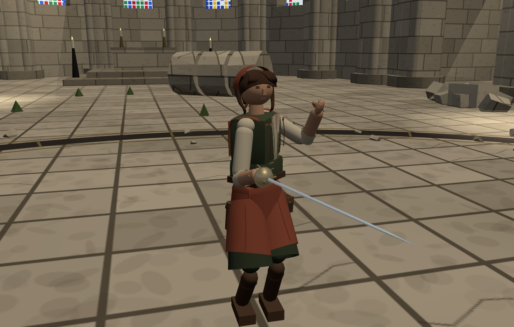
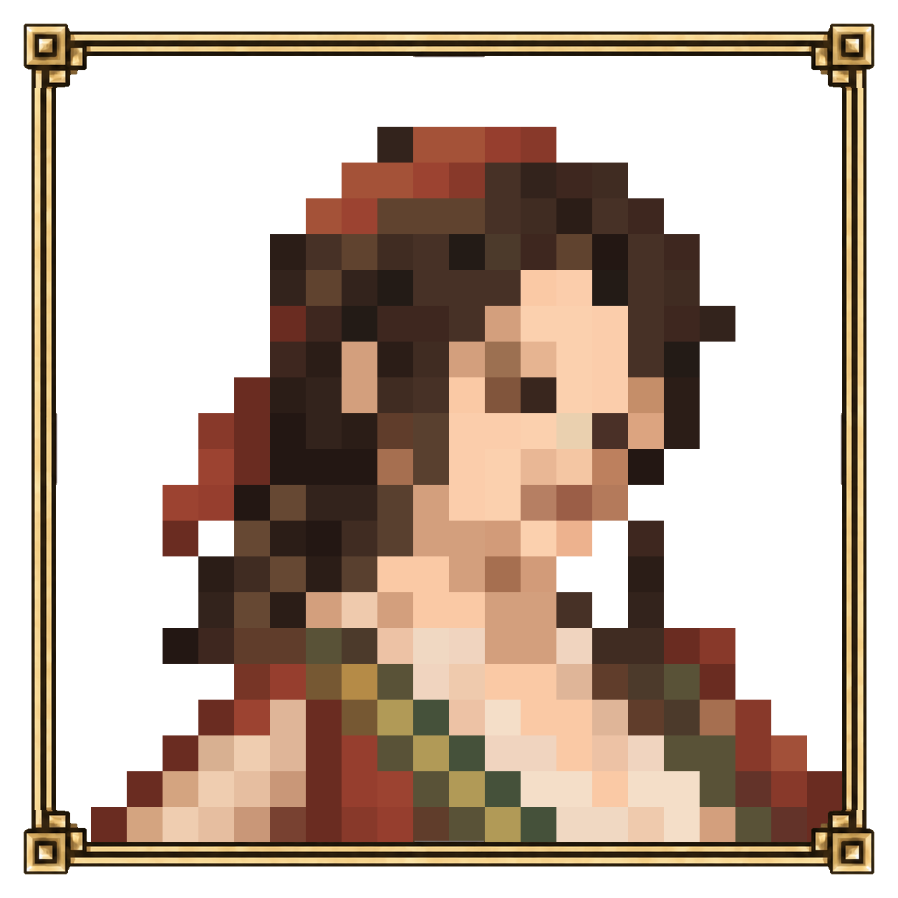
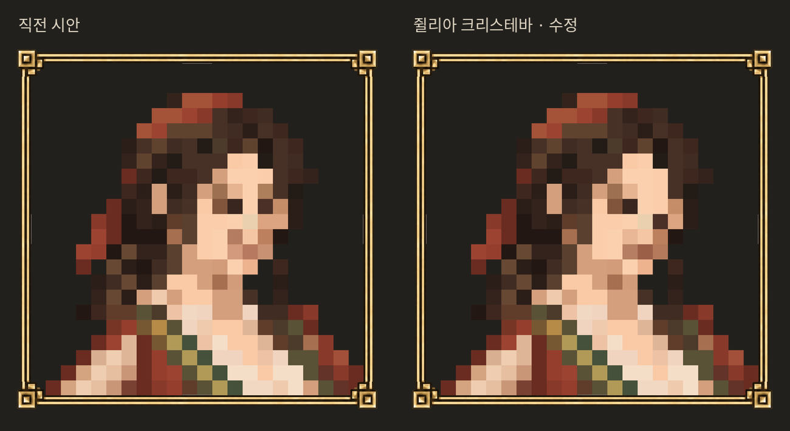
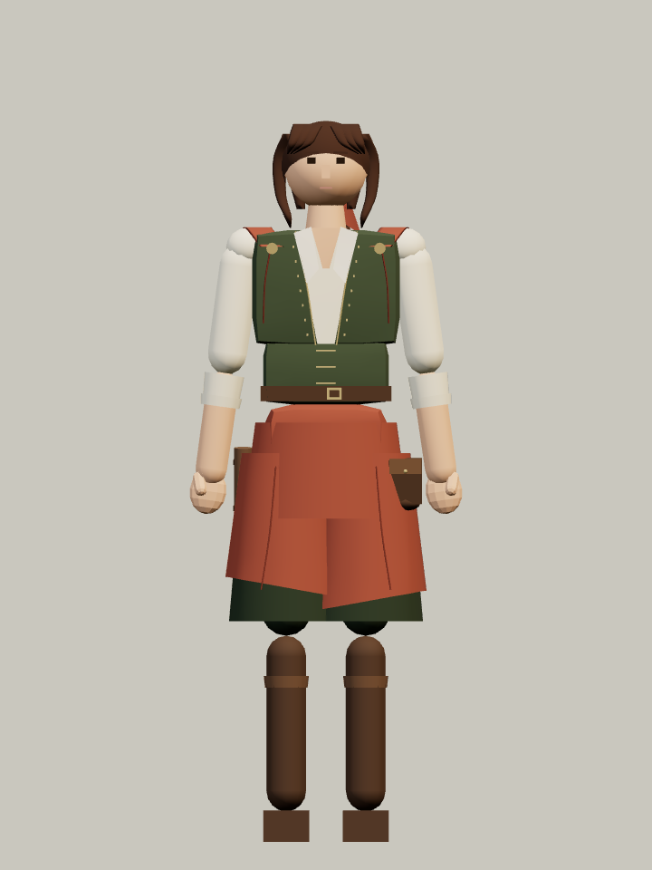
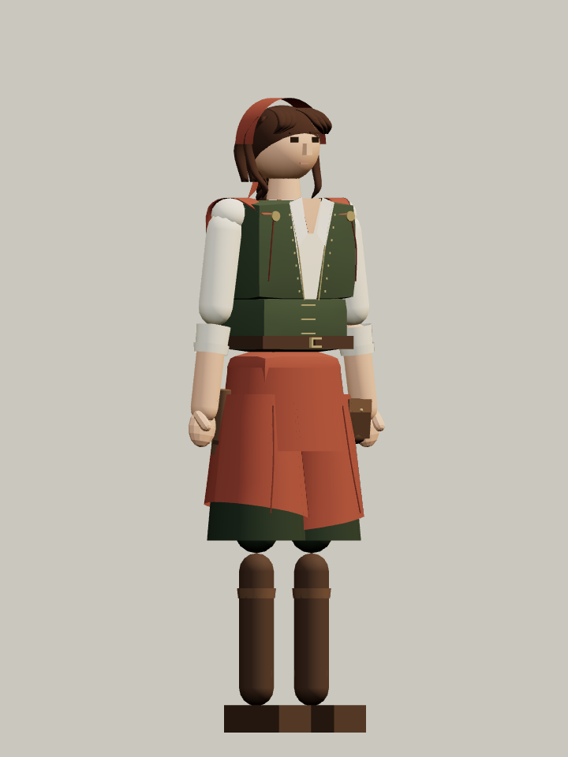
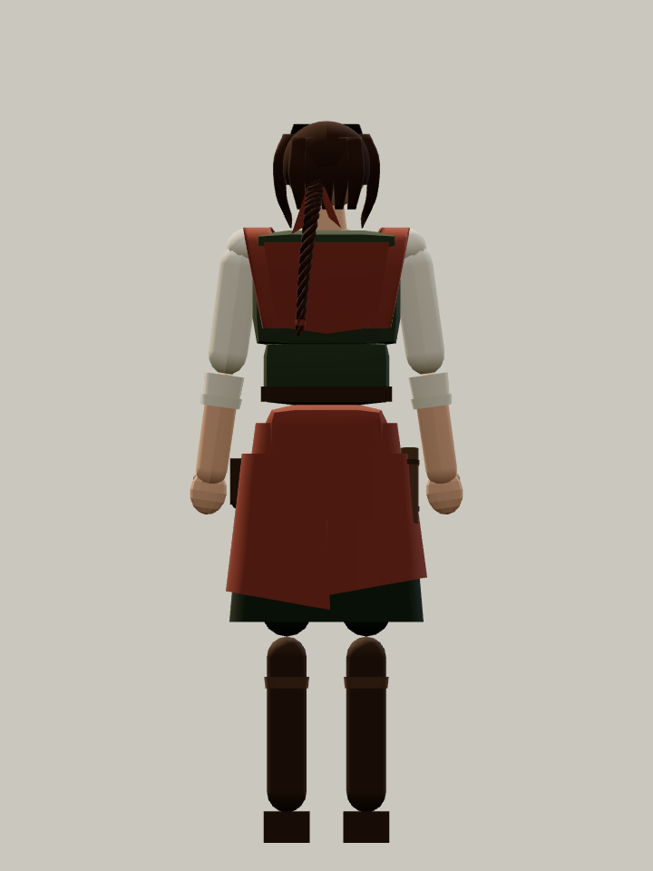

STILLNESS · 캐릭터 검토
쥘리아 크리스테바
이탈리아 유파 · 숙련도 4
기존 게임의 얼굴과 신체로 다시 제작했습니다. 녹색 조끼, 적갈색 겹치마, 붉은 머릿수건과 땋은 머리를 입혔습니다.

실제 게임 화면 · 이탈리아 자세
눈 한 줄 단차 · 화면 오른쪽 눈 한 줄 · 작은 미소공통 액자와 고정 격자
왼쪽 직전 시안 · 오른쪽 수정안


정면·사선·뒷면은 게임 캐릭터의 도감 촬영입니다. 레이피어는 검토용 무기이며 상점 기능과 정규 등장 편성은 아직 연결하지 않았습니다.